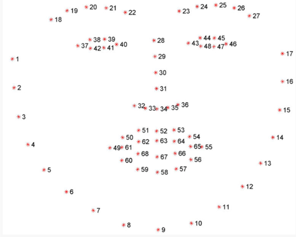

功能
通过识别驾驶员的面部信息来判断驾驶员是否疲劳驾驶
实现思路
- 通过摄像头得到驾驶员驾驶的实时视频
- 找出每一帧图片中驾驶员的面部
- 找出驾驶员面部眼睛的位置
- 计算出眼睛的长度和宽度，并计算出长宽比例
- 当长宽比接近与0，即驾驶员闭眼。当驾驶员连续多帧闭眼，即判断疲劳驾驶
图像识别函数功能说明
我们在得到图片中的脸部图向后要我们要找到眼睛的坐标位置，这里我们使用dilb为我们提供的函数将脸部转化为68个特征点，如下图所示。其中眼睛由6个点表示，通过计算坐标点的欧几里得距离，我们就可以获得长度和宽度了，最后就可以求出比值

代码实现
注1：代码所运行的环境是ubuntu16.04，python版本是3.5
注2：以下是引用的python包，可用pip install安装
1 | from scipy.spatial import distance as dist |
- 打开电脑摄像头，并循环读取每一帧图片
1 | vs = VideoStream(src=0).start()#打开摄像头 |
- 找出每一帧图片中的人脸
1 | gray = cv2.cvtColor(frame, cv2.COLOR_BGR2GRAY)#灰度化 |
- 将每一张人脸特征点化，并将特征点转换为numpy矩阵，求得眼睛的坐标索引
1 | predictor = dlib.shape_predictor('test.dat')#这是设置提取脸部特征点的函数，test.dat是官方提供的训练好的模型 |
- 得到特征点中眼部的索引，并从矩阵中提取出来，作为下述计算长宽比函数的参数
1 | (lStart, lEnd) = face_utils.FACIAL_LANDMARKS_IDXS["left_eye"]#获得左眼的索引 |
- 求出眼睛长宽比。先定义求值函数，再将3中得到的leftEye和rightEye作为参数传入
1 | def eyeAspectRatio(eye):#计算两眼的长度和宽度，并算出长宽比 |
- 比较长宽比，如果长宽比小于阈值，则计数+1，当计数值大于一个数时。则表示疲劳显示出警告
1 | if ear < EYE_AR_THRESH: |
参考：https://www.pyimagesearch.com/2017/05/08/drowsiness-detection-opencv/